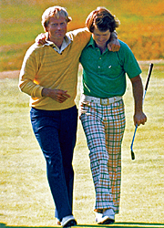

Introduction
The game of golf is quite a puzzling sport. While it is often not featured on the front pages of major sports sites, golf is actually one of the most popular sports in the world, with an estimated fan base of over 450 million people. Aside from its popularity, the very nature of the game of golf give rise to a unique culture that makes this sport remarkably unique in almost every which way.
I have been playing golf since I was 10 years old, and I have fallen in love with the game. Not only is it a game you can play for life, golf also has a unique history and culture that makes it fascinating. One can also learn many important life lessons from the game of golf. In addition, golf is a lot of fun to play. From the adventure of playing a new course to the stress-relief of hitting balls after a long day, there is always something exciting about the game of golf.
History
The game of golf is played on an area known as the course with an arranged progression of 18 holes. Each hole contains a tee box to start from, and a putting green containing the actual hole, a cup 11 centimeters in diameter. Holes may also contain obstacles that the player must navigate around, such as long grass (rough), sand traps (bunkers), and water hazards. The objective of the game is to strike the ball into the hole in as few strokes as possible. While the origins of modern golf are not completely clear, the general consensus is that golf was first played in Scotland during the late medieval era, probably originating from the 15th century. During this time the many of the first historical references to the sport were made, as nobles and courtiers began to pick up the sport. During this period, golf was actually banned numerous times for distracting young nobles from their archery practice. In 1504, King James IV, himself a golfer, decided to lift the ban. During this time, golf flourished as a new sport, and The Old Course at St. Andrews, Scotland, which still hosts The Open Championship today, was designed.
As new courses sprung up, golf gradually expanded into the rest of Europe, the Americas, and eventually the entire world. As this occurred, golf became unique in that it is one of the only ball sports to not utilize a standard playing area. In fact, navigating the differences in design, terrain, and climate of different courses became an essential part of the sport. From the park courses of America to the links of Scotland, each course provide a unique set of challenges, and new courses give rise to infinite new opportunities. In 1860, the Royal & Ancient Golf Club of St. Andrews (The R&A) established The Open Championship, paving the way for the rise of professional golf. Golf would grow rapidly from then on and give rise to superstars like Young Tom Morris, Harry Vardon, Bobby Jones, Gene Sarazen, Sam Snead, Ben Hogan, Arnold Palmer, Gary Player, Jack Nicklaus, Tom Watson, and Tiger Woods. With the reintroduction of golf into the Olympics in 2016, the future of the game is now brighter than ever.
A Gentleman's Game
The unique nature and culture of make golf a true gentleman's game. As one of the few modern sports with royal and aristocratic roots, golf has built a certain culture around mannerisms and etiquette, something that is not seen in many other sports. Golf is a lifelong sport that teaches its players the values of respect, courtesy, and integrity. It's one of the few sports where the player is expected to call penalties on themselves instead of referees. Traditions like tipping your hat and shaking your opponent's hand at the end of a round signify the value of respect in the game. Honesty is also paramount, as it is impossible to have referees constantly micromanaging everything that every player does on a 120-acre-plus course.
While the competitive aspect of the game can be quite fierce, golfers usually manage to rise above it for the good of the game, leading to long-lasting friendships, such as between Arnold Palmer and Jack Nicklaus. In addition, the lifelong and conversational aspects of golf make it ideal for everyone, from the businessman to the average player looking to let loose with some friends on the weekend. In fact, almost all the U.S. presidents since William Howard Taft have played to sport to varying extents. Golf has shaped my life in a tremendous way, and I know that I will continue to enjoy it in the years to come.